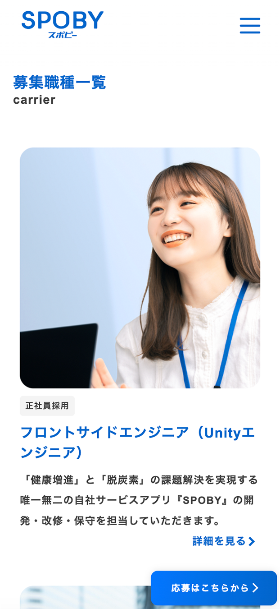

SPOBY 採用ページ
制作背景・意図
- 【概要】
-
- 役割 : どのような職種、業務内容、求める人物像などを明確に伝え、求職者が自身のやりたいことと、SPOBYでの業務内容の相性を判断するための採用ページ
- 対象ユーザー : SPOBYのサービス価値や考え方に共感してくれる求職者
- 掲載場所 : SPOBY公式サイト内 採用ページ
- アプリ（SPOBY）について :
「SPOBY」は人の活動による脱炭素・健康増進を実現するアプリです。ユーザーはアプリを利用して活動を行うことでポイントを獲得でき、貯まったポイントはアプリ内に掲載されている様々なリワードと頑張ったご褒美として交換・獲得することができます。
- 【制作目的】
-
- なぜその職種を募集しているのかを正しく理解してもらうため、事業内容や募集背景を整理し、情報として明確に提示しています。さらに、職種ごとに具体的な業務内容や役割を記載することで、応募前に仕事内容や期待される役割を具体的にイメージできる状態をつくり、入社後のミスマッチを防ぐことを目的として制作しました。
- 【背景/課題】
-
- 求職者が企業概要や募集職種名のみを見て応募判断してしまうことで、求職者とSPOBYの間に認識のズレが生じ、入社後のミスマッチにつながってしまう課題がありました。そのため、募集している職種ごとの具体的な業務内容や役割、企業として求める人物像を事前に理解してもらう必要がありました。
- 【制作時に重視したポイント】
-
- 募集している職種や業務内容、役割、求める人物像を正しく伝えることが、求職者とSPOBYとのミスマッチを軽減する上で重要だと判断しました。一方で、これらの情報は量が多くなりやすいため、すべてを一画面に詰め込むのではなく、「募集職種一覧」と「募集職種ごとの詳細ページ」に情報を分ける構造としています。これにより、求職者がまず全体像を把握し、その上で関心のある職種について段階的に理解を深められるよう、視覚的・情報構造の両面から理解しやすい設計を意識しました。